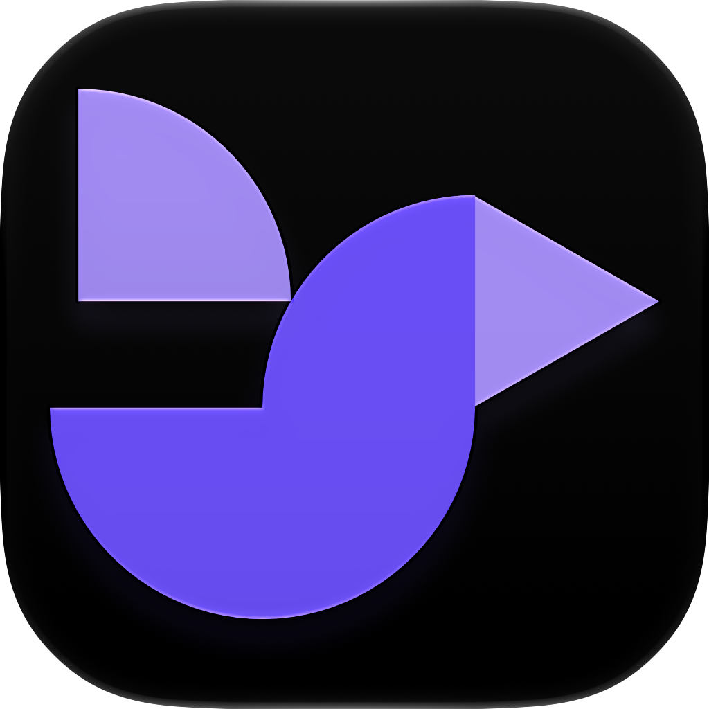
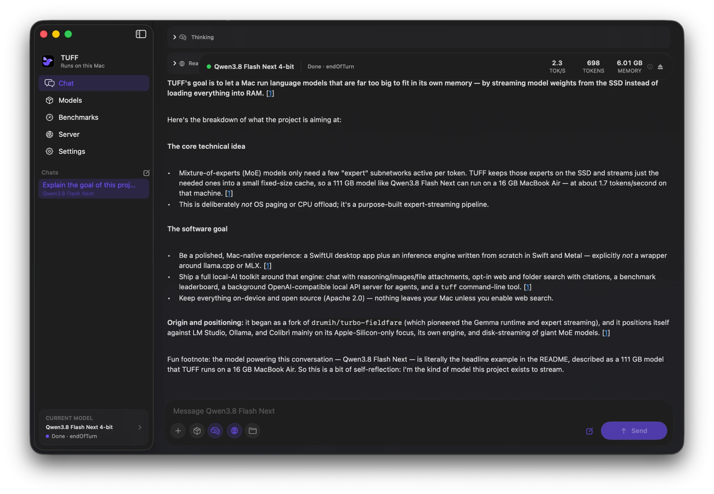

The local AI app built for the Mac. A native chat app and local API, with its own Swift and Metal engine that runs models far bigger than your Mac's memory.

Most apps need the whole model in memory. TUFF keeps a mixture-of-experts model's experts on the SSD and loads only the few each token needs. That's how Qwen3.8 Flash Next runs on a 16 GB MacBook Air, along with GPT-OSS 120B and MiniMax M2.7.
It has a cost: on that Air, Flash Next writes about 1.7 tokens a second. Smaller models are quick, and bigger Macs do better. See how every model runs on real Macs · How it works
Turn on Web or Files and the model searches the web or folders you pick, with numbered sources. Both are off until you want them.
Measure any installed model on your Mac and share it on the leaderboard in a couple of clicks.
Going back to a recent chat continues from the model's saved state instead of reading the whole conversation again.
The Background API serves your models to agents and other apps over an OpenAI-compatible endpoint, even with TUFF closed.
Nine models across Gemma 4, Qwen, GPT-OSS and MiniMax, each with its own tested runtime in an engine written in Swift and Metal for Apple Silicon only. Everything runs on your Mac. Web search, when you turn it on, sends only the query to the provider you choose.
brew tap rexmhall09/tuff https://github.com/rexmhall09/TUFF.git
brew install --cask rexmhall09/tuff/tuffThat installs the app and the tuff command. Or download the
ZIP above and move TUFF.app to Applications. You need Apple Silicon and
macOS 15 or newer. TUFF isn't notarized, so the first time, Control-click
it and choose Open.
TUFF is a small open-source project, so help really counts. The easiest thing: run the benchmark on your Mac and share it. I only have one Mac to test on. Bug reports, docs, design and code are all welcome too, and AI-assisted PRs are fine as long as you've checked them yourself.